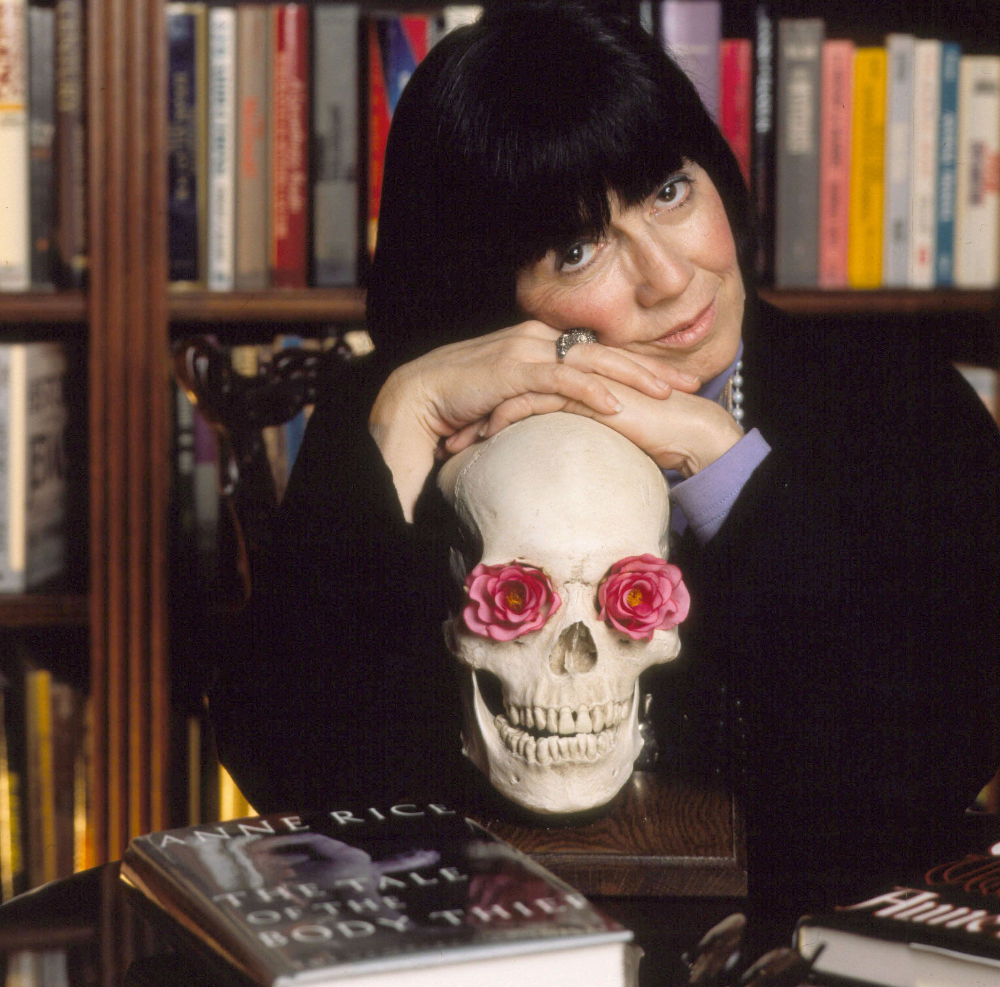

Anne Rice

An American author of gothic fiction best known for her novels "The Vampire Chronicles"
Here's a time line of Anne Rice's life:
- October 4, 1941 - Born Howard Allen Frances O'Brien in New Orleans, Louisiana, U.S.
-
October 14, 1961 - Married Stan Rice in Denton, Texas.
-
September 21, 1966 - Michele Rice was born.
-
August 5, 1972 - Michele died at Stanford Children's Hospital in Palo Alto.
-
March 11, 1978 - Christopher Rice was born.
-
December 14, 1998 - she fell into a coma, later determined to be caused by diabetic
ketoacidosis, and nearly died.
-
January 18, 2004 - Announced on her website that she had made plans to leave New
Orleans.
- July 18, 2010 - Rice auctioned off her large collection of antique dolls.
If you have time, you should read more about this incredible human being
on his
Wikipedia
entry.